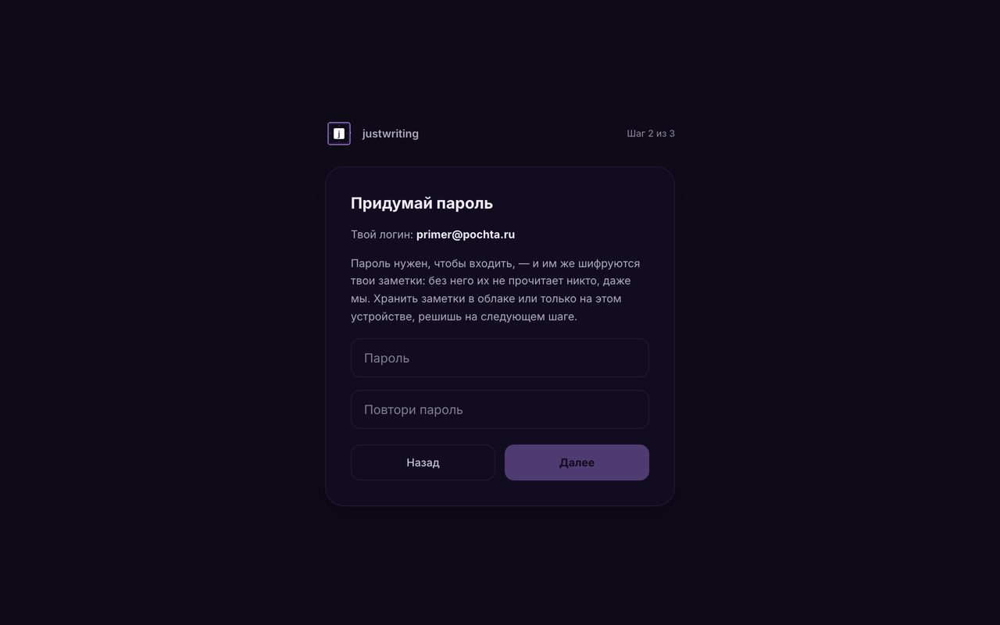
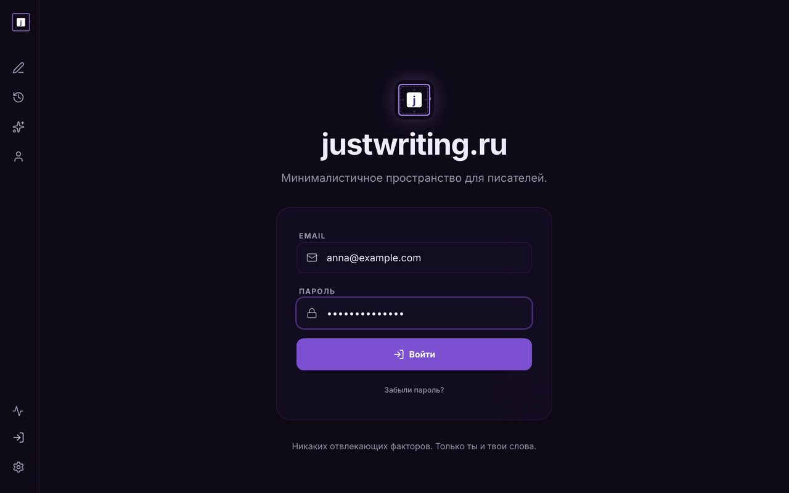
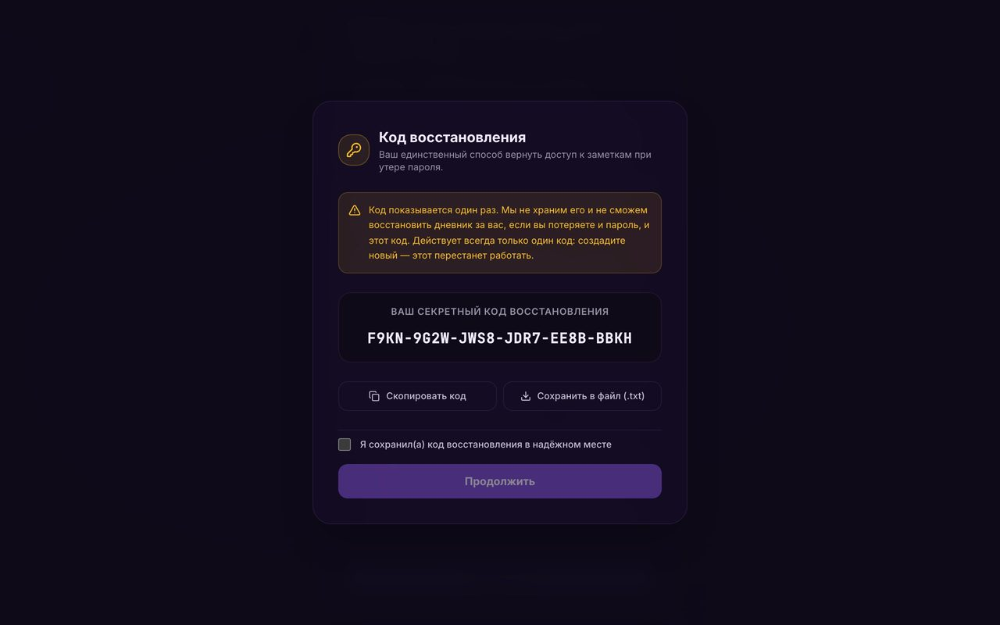
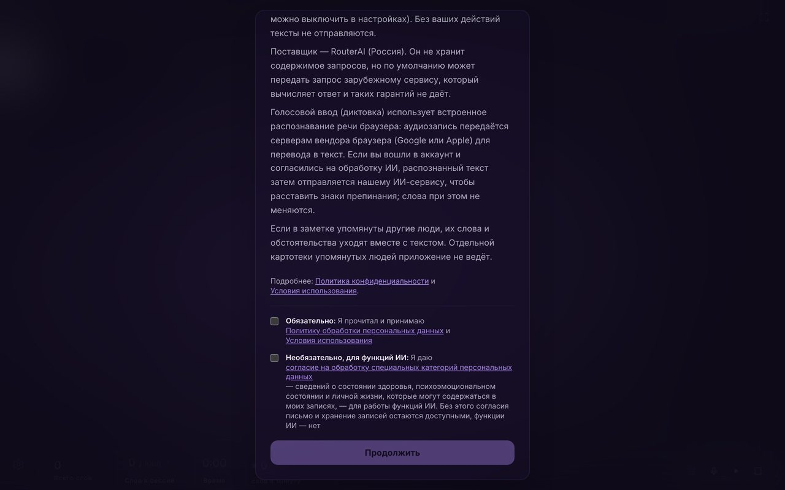
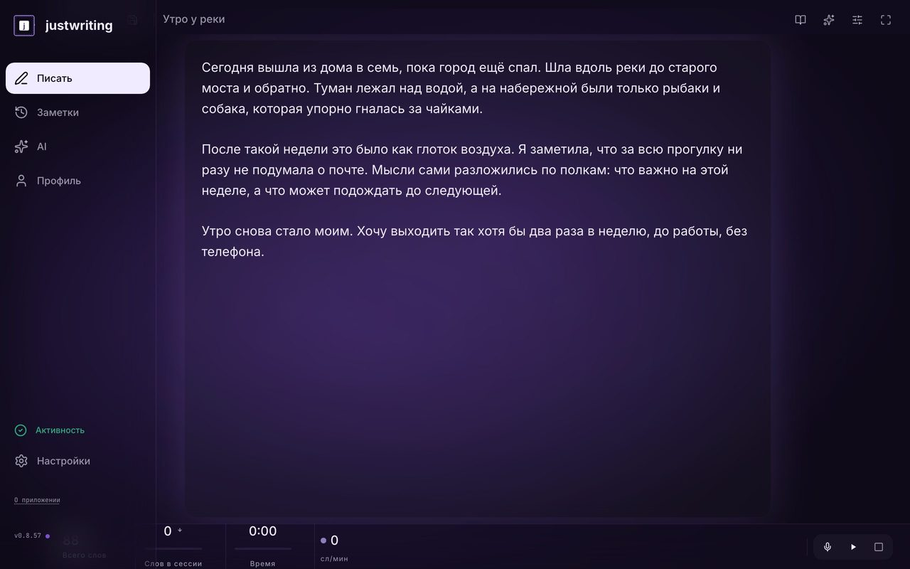

Начало работы
justwriting — тихий редактор для свободного письма и дневника. Здесь коротко о том, как войти в первый раз, что спросит приложение и где что находится.
На этой странице
Что такое justwriting
Вы пишете в браузере, и заметки хранятся на вашем устройстве. Облако — вторая копия, зашифрованная вашим паролем: она нужна, чтобы заметки не пропали и были доступны на другом компьютере. ИИ-собеседник есть, но включается только по вашему желанию.
Руководство написано для компьютера. Версия для телефона пока в работе; на телефоне открывается та же версия, что на компьютере.
Разделы руководства
- Как писатьЭкран письма, цели по словам и времени, режимы тишины и дзена, сохранение и черновики.
- ЗаметкиСписок заметок, поиск, теги и метки, календарь, предпросмотр, корзина, экспорт одной заметки.
- ИИ-собеседник и разборЧат с ИИ, разбор заметки, поиск по смыслу, память ИИ, лимиты и приватность.
- Облако и устройстваАвтосинхронизация, значки облака у заметок, работа на двух компьютерах.
- Пароли и шифрованиеОдин пароль для входа и заметок, сейф, код восстановления, выход из аккаунта.
- Резервные копии и импортВыгрузка всех заметок в ZIP и JSON, перенос архива, импорт файлов.
- Профиль и статистикаКак вы пишете в цифрах: активность, серия дней, настроение, достижения.
- Вопросы и проблемыЗаметки не видны, спрашивает пароль, ИИ не отвечает — и куда писать.
Как получить доступ
Зарегистрироваться самому сейчас нельзя: аккаунт создаётся по приглашению. Если приглашения у вас нет, напишите на support@justwriting.ru.
- Откройте письмо-приглашение и перейдите по ссылке из него.
- Откроется мастер приглашения: приветствие, шаг Как мы обращаемся с данными, затем шаг Придумай пароль. Введите пароль в поля Пароль и Повтори пароль — не короче 8 символов.
- Нажмите Далее, ответьте на вопрос Хранить заметки в облаке?, сохраните код восстановления и нажмите Начать писать.
- На странице входа введите Email и Пароль и нажмите Войти.
На странице входа есть кнопка Регистрация: пока приложение в тестировании, она ничего не создаёт, а объясняет, как попросить приглашение, и открывает чат в Telegram.
Ссылка из письма переживает перезагрузку страницы: настройка продолжается с того же шага, а не начинается заново. Открыть её второй раз можно — это не «сжигает» приглашение и не выкидывает из аккаунта. Ссылки на политику и условия открываются в новой вкладке, чтобы настройка не прерывалась. Если ссылка уже использована, приложение говорит об этом прямо и подсказывает, что делать; если вы открыли её в другом браузере, приложение подскажет, где настройка была начата.


Забыли пароль входа — нажмите Забыли пароль? на странице входа. Подробно — в разделе Пароли и шифрование.
Первый вход: что появится
При первом входе приложение по очереди задаст несколько вопросов. Некоторые окна появляются, только если есть повод. Окна идут по одному, а не стопкой: синхронизация, сейф и загрузка из облака никогда не предлагаются одновременно, а согласие на поиск по смыслу, данное раньше, не спрашивается заново посреди разговора.
1. Код восстановления
Окно Код восстановления показывает код из 24 символов. Это единственный способ вернуть доступ к зашифрованным заметкам, если вы забудете пароль. Код показывается один раз, и мы его не храним.
Код показывается всегда, даже если вы отказались от облака: сейф создаётся на этом устройстве в любом случае, и код нужен именно для него. Этот шаг идёт после двух ответов — про политику и про ИИ, — чтобы код не можно было пропустить. Кнопка Не сейчас тоже ведёт к окну кода, а не пропускает его.
- Нажмите Скопировать код или Сохранить в файл (.txt) и положите код в надёжное место — например, в менеджер паролей или на бумагу.
- Отметьте галочку о том, что код сохранён в надёжном месте.
- Нажмите Продолжить.

2. Политика конфиденциальности и согласие на ИИ
Окно Политика конфиденциальности коротко рассказывает, как хранятся ваши данные и что уходит поставщику ИИ. Закрыть его без ответа нельзя.
- Первая галочка обязательная: вы принимаете политику и условия использования.
- Блок Функции искусственного интеллекта — необязательный. Без этой галочки можно писать и хранить заметки, но ИИ работать не будет. Согласие можно дать или отозвать позже в Настройки → Безопасность.
Нажмите Продолжить.

3. Синхронизация с облаком
Если на этом устройстве уже есть заметки, появится окно Синхронизация с облаком: Включить синхронизацию или Оставить выключенной. Выбор можно поменять в любой момент в Настройки → Синхронизация.
4. Перенос гостевых заметок
Если до входа вы писали в этом браузере без аккаунта, появится окно Локальные записи найдены.
- Переместить в аккаунт — заметки и черновик станут частью вашего аккаунта. В облако они уйдут, только если включена автосинхронизация.
- Оставить локальными — заметки останутся гостевыми. Для этого аккаунта вопрос больше не появится; гостевые заметки снова будут видны, когда вы выйдете из аккаунта.
5. «Сколько хочешь писать?»
Если заметок ещё нет, на экране письма появится вопрос о цели: Лёгкий старт (100 слов), Обычный (300), Серьёзно (750) или Свой. Нажмите Начать. Цель потом легко поменять прямо во время письма — см. Как писать.
Если вы входите на новом компьютере
Если в облаке заметок больше, чем на этом устройстве, приложение предложит загрузить их: окно Загрузка данных из облака, кнопка Начать загрузку. Перед этим оно может попросить пароль от аккаунта в окне Разблокировать шифрование. Подробнее — в разделе Облако и устройства.
Можно ли писать без аккаунта
Да. Если открыть приложение и не входить, вы работаете как гость:
- заметки хранятся только в этом браузере на этом устройстве;
- облачной копии нет — если очистить данные браузера, заметки пропадут;
- ИИ недоступен: вместо него вы увидите Требуется регистрация.
Когда появится аккаунт, нажмите Войти внизу меню слева. После входа приложение предложит перенести гостевые заметки в аккаунт. Незаконченный черновик тоже предлагается перенести; если в аккаунте уже есть свой черновик, гостевой сохраняется отдельной заметкой, а не пропадает.
Плохая связь при первом входе на новом устройстве не сбрасывает данное ранее согласие на ИИ: приложение не считает отказ сети отзывом и не спрашивает согласие заново.
Что где находится
После входа открывается экран письма. Слева — узкое меню из значков; наведите на него мышь, и появятся подписи.

| Пункт меню | Что там |
|---|---|
| Писать | Экран письма. Здесь пишут, сохраняют заметку и продолжают старые. Как писать |
| Заметки | Все ваши заметки: поиск, теги, календарь, корзина. Заметки |
| AI | Разговор с ИИ-собеседником. Только для вошедших. ИИ-собеседник и разбор |
| Профиль | Статистика письма, серия дней, настроение, достижения. Профиль и статистика |
| Значок облака с чертой | Появляется, только если что-то не так: есть неотправленные заметки или нет связи с облаком. Нажмите на него — откроются Настройки, где в разделе Синхронизация видно, что происходит. Облако и устройства |
| Журнал / Активность | Журнал событий приложения: что сохранилось, что отправилось, какие были ошибки. Если что-то пошло не так, значок становится жёлтым или красным. Пригодится, когда пишете в поддержку. |
| Настройки | Аккаунт, синхронизация, пароли и шифрование, ИИ, резервные копии, версия приложения. |
На самом экране письма:
- Шапка — кнопки Новая заметка, Открыть, Сохранить, поле для названия. Справа — Журнал (список заметок с поиском и статистика дня — не путать с журналом событий в меню), ИИ-помощник, Редактор (оформление) и Полный экран.
- Текст — в центре.
- Нижняя панель — счётчики слов, время, скорость, кнопка микрофона, пауза и стоп.
Во время письма шапка и панели прячутся, чтобы не отвлекать. Пошевелите мышью — они вернутся.
Где настройки
Настройки — внизу меню слева. Разделы:
- Аккаунт — имя, e-mail и кнопка Выйти;
- Синхронизация — автосинхронизация с облаком и её состояние;
- Безопасность — пароль, шифрование, согласие на ИИ;
- Резервная копия — выгрузка всех заметок;
- О приложении — номер версии, журнал изменений, помощь;
- Удаление аккаунта.
Первые пять минут: ваша первая заметка
- Откройте Писать в меню слева.
- Просто начните печатать. Сессия и таймер запустятся сами. Если не знаете, с чего начать, в пустом поле есть подсказка дня.
- Пишите, не останавливаясь и не исправляя. Внизу видно, сколько слов уже написано и сколько осталось до цели.
- Когда закончите, нажмите ■ Стоп в нижней панели, Сохранить в шапке или Ctrl+Enter (⌘+Enter на Mac).
- В окне завершения придумайте название и, если хотите, добавьте теги и отметьте, как вы себя чувствуете (можно пропустить). Нажмите Сохранить.
- Откройте Заметки — ваша первая запись уже там.
Если вы закроете вкладку, не сохранив заметку, текст не пропадёт: при следующем открытии он вернётся как черновик. Подробнее — в разделе Как писать.